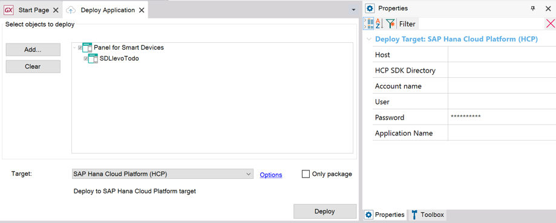

Application Deployment tool (Genexus 17 Upgrade 4)
Through the menu option found under Build / Deploy Application, you can access the Application Deployment tool and get the following:
- Local Deploy; it lets you package web applications. That is to say, you package Web objects and Services and get a .zip, .war, .ear, etc. with the corresponding classes, libraries, and resources to be installed in Tomcat, Websphere, JBOSS, IIS, or any Web Server of your favorite Infrastructure as a Service or Hosting providers)
- Docker Containers Deploy; it lets you build Docker images with your application
- Cloud Deploy; it lets you deploy those packages to the most popular Platform as a Service (PaaS) Cloud Providers (i.e., AWS Elastic Beanstalk, Google App Engine, IBM Bluemix, Microsoft Azure, SAP Cloud Platform) or to Serverless Platforms (i.e., AWS Lambda & API Gateway).
- Package batch processes. That is to say, you package command line Procedures and get .zip or .jar files with the corresponding classes, libraries, and resources. Command line procedures can also be deployed to Serverless Platforms (as AWS Lambda Functions).
The Application Deployment tool is extensible and customizable. The options available through the UI are just a part of all those available through Application Deployment MSBuild tasks.
The following steps guide you through the basics. There may be additional considerations, specific to the platforms and clouds which may be covered in the related documents.
Page contents
- Page contents
- First Step: Select what you want to deploy
- Security
- Deployment of a Java application to Tomcat, Websphere, JBoss, etc
- Deployment of a .NET application to IIS
- Deployment of applications to Docker Containers
- Deployment of applications to the Cloud (PaaS)
- Deployment of Batch processes
- EAR Deployment
- Deployment of additional files and directories
- How to exclude objects from the Deployment unit
- FAQ
First Step: Select what you want to deploy
The 'Add' / 'Clear' buttons let you add or remove objects.
By just selecting the main object, all the called ones will be included automatically (those do not appear in the list).
Only the objects available for selection in a Deployment Unit object can be selected

In case of selecting one or more Native Mobile main objects to be deployed, the deployment will include all the server-side components that the application requires, including all the necessary REST services and also the application metadata files as indicated in the App Update and Enable KBN properties. It does not deploy the Android or Apple application binaries (apk or ipa files), and there is no connection with the application stores.
Notes:
- This only deploys the Web or Application Server components, it does not deploy the Database. See Export Reorganization or the FAQ below for more information and other options.
Security
For additional security, you may change Application Encryption Key property.
GAM
When Enable Integrated Security property is set to TRUE, the Include GAM Backend property will be shown. In case Include GAM Backend property is set to TRUE, the GAM Backend files will be included in the package. Otherwise, they will not be included.
You can save your selection into a Deployment Unit object or select an existing one. If you do not choose any Deployment Unit, a default one will be created containing the objects you chose to deploy.
Deployment of a Java application to Tomcat, Websphere, JBoss, etc
Provided you selected Web or Smart Devices objects to deploy, the Deploy button creates a .war package with the required binaries and resources configuring it, so that you can deploy it to the Web Application Servers that support the following:
- Generic Servlets 2.4 (i.e. Apache Tomcat 5, WAS 6) (As of GeneXus 15 Upgrade 5)
- Generic Servlets 2.5 (i.e. Apache Tomcat 6, WAS 7)
- Generic Servlets 3.0 (i.e. Apache Tomcat 7, WAS 8.x)
- Generic Servlets 3.1
- JBOSS (Enterprise Java Beans)
- Tomcat 8.x
- WebSphere (Enterprise Java Beans)
Notes
- Tomcat 8.x uses Generic servlets Specification 3.1. Choose Tomcat 8.x target when your application supports file download. Ref.: SAC 41714, Apache Tomcat Versions
- In Jboss, when restarting it, it will delete and redeploy the war files, so if there were some changes made in the files of the deployed application they will be lost (unless updating the .war file with the new changes or reconfiguring Jboss to not redeploy the war files).
Select Target Local and choose one of the available application servers of the list, then hit 'Deploy'.
Deployment of a .NET application to IIS
Provided you selected Web or Smart Devices objects to deploy, the Deploy button creates a .zip package with the required binaries and resources configuring it so that you can deploy it to the following Web Application Servers:
- IIS 7
- IIS8 (or higher)
Select Target Local and choose one of the available application servers of the list, then hit 'Deploy'.
Deployment of applications to Docker Containers
When you selected the Target 'Docker Image', GeneXus creates a Docker image with your application so that you can deploy it. More information at How to Deploy an Application to Docker.
Deployment of applications to the Cloud (PaaS)
Provided you selected Web or Smart Devices objects to deploy, and Target other than 'Local' or 'Docker Image', the 'Deploy' button creates a package with the required binaries and resources so that it can be deployed to the Cloud. Finally it deploys the package to the cloud with the credentials and options you set in the Deployment Properties.

Available Cloud Targets for .NET: AWS Elastic Beanstalk, Microsoft Azure WebApp
Available Cloud Targets for Java: AWS Elastic Beanstalk, Google App Engine, IBM Bluemix, SAP Cloud Platform, AWS Serverless, AWS Lambda Function, Microsoft Azure WebApp
Available Cloud Targets for .Net Core: Microsoft Azure WebApp
Note: If you need deployment management, traceability of deployments, and assistance for creating production-ready cloud environments, the answer is GeneXus Cloud Deployment Services.
Deployment of Batch processes
Provided you select only one or multiple procedures (Main Object = True, Call Protocol = Command Line or Internal, Expose as Web service = False) and Target = Local, the 'Deploy' button creates a package (.zip or .jar) with the required binaries and resources to run it.
EAR Deployment
If some selected object (or a called one) is an EJB, then the Deployment tool creates a .ear (Enterprise Archive Resource) file.
The generated EAR has one web application with all the servlets and static contents, one EJB application with all the EJB defined, and all the JAR files required by the application.
Deployment of additional files and directories
To include extra files in the deployment package, you can
- Select a File object. Note that Extract property has to be set for that File so that the deployment tool can take it from the path set in the 'Extract to path' property and include it in the deployment package.
- Create or Change the <KB Directory>\<Environment Target path>\web\<Deployment Unit Object Name>_user.gxdproj setting the Files or Directories to include. (*). See Customize GeneXus Deployment capabilities for more information.
If you need to modify the configuration files of the deploying packages (web.xml in Java and web.config in .Net) but you do not want to create a new configuration file you can modify the templates in the Genexus directory under ApplicationServers\Template (JavaWeb\Generic_Servlet_Base.stg for Java and \CsharpWeb\IIS_base.stg for .Net).
(*) The name of the file user.gxdproj changed to <Deployment Unit Object Name>_user.gxdproj in GeneXus 16 upgrade 8 in order to be able to deploy different files and directories to each Deployment Unit.
How to exclude objects from the Deployment unit
- Create or Change the <KB Directory>\<Environment Target path>\web\<Deployment Unit Object Name>_user.gxdproj setting the Files or Directories to exclude. See Customize GeneXus Deployment capabilities for more information.
FAQ
Q: Where are the packages created?
A: Look at the details in the output window. The packages are created typically under the following path: '<KB Directory>\<Environment Directory>\Deploy\<Target>\<Deployment Unit Name>\<TimeStamp>\'.Use Tools / Explore Target Environment Directory and go to the parent folder, you will see the Deploy folder there.
Q: How intelligent is it? I mean: will it package every file or directory set in the classpath property?
A: No, GeneXus + Application Deployment tool make up a smart team ;-). It takes just the drivers corresponding to your Environment and only the libraries that your application uses (i.e. If it doesn't create Excel files, it doesn't include the POI library, etc.). That said, if you have additional files (like jars) that need to be deployed with your app you'll have to add them as files in the Knowledge Base and add those files to the Deploy Dialog, just as you would with a regular main object. For more info about this take a look at Adding additional files to an application package
Q: My app uses Query Viewer, all right?
A: Yes, if the selected objects use the Query Viewer Control, it takes the corresponding binaries and resources for the Query Viewer User Control and the referenced Query objects.
Q: What about GAM?
A: If Enable Integrated Security property is True, it takes the corresponding binaries and resources for the GAM API. If you need to package the GAM Example Web Objects, add the GAMHome to your list. It does not initialize or populate GAM's tables with the required permissions, roles, etc; look at GAM applications deployment for that.
Q: Does it deploy the GeneXus Flow Inbox and its API?
A: Yes. If the KB Version has a BPM Diagram it takes the corresponding binaries and resources.
Q: How to deploy the objects that are referenced by my business processes?
A: Select a Business Diagram and the objects it uses will be deployed! Note: It does not impact workflow tables! Refer to HowTo: Deploying a Workflow-based Application to do that.
Q: How to create a deployment package for the Reorganization?
A: This option is available in Build / Export Reorganization. More Information:Export Reorganization.
Q: What about traceability, deployment Management?
A: The answer is GeneXus Cloud Deployment Services. A free playground is ready for you: GeneXus Cloud Sandbox.
Q: Does GeneXus provide some spaces in the Cloud for prototyping?
A: Oh, you didn't know? Yes, since 2012 there are Servers available for Cloud prototyping! Use Deploy to cloud property, hit F5 and you're prototyping on the cloud for free.
- Deploy to PaaS
- Containerization